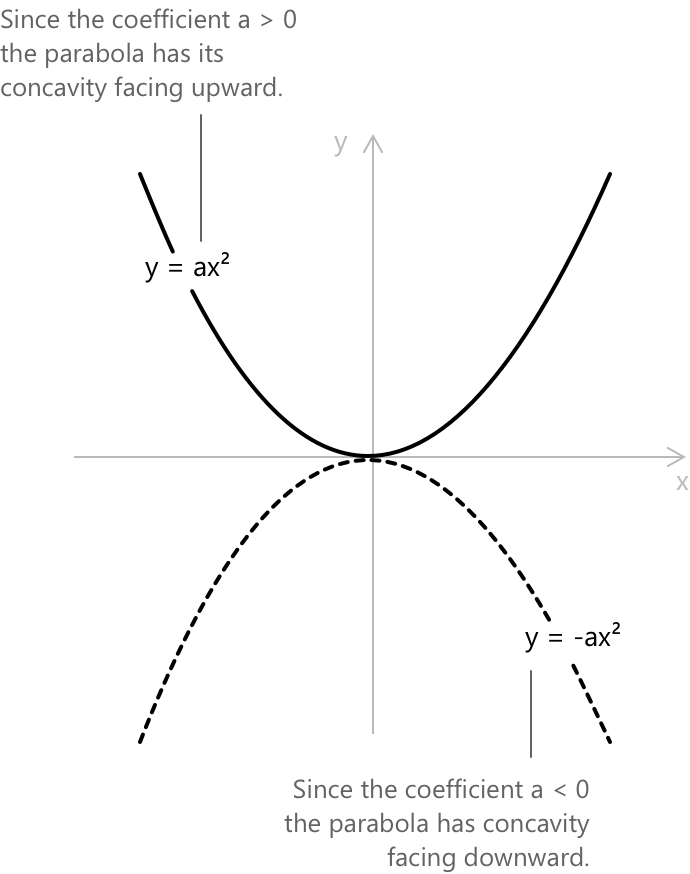

Триноми
Означення
Трикутом визначається як поліном, що складається рівно з трьох ненульових, попарно різних доданків. У більш загальному випадку, у комутативному кільці з одиницею, трикутом у невизначеній величині \(x\) є будь-який вираз вигляду:
\[ a_n x^n + a_m x^m + a_k x^k\] \[n > m > k \geq 0\]
Коефіцієнти \(a_n, a_m, a_k\) є ненульовими елементами кільця. Коли базовим кільцем є \(\mathbb{R}\), коефіцієнти є дійсними числами, а ступінь трикута дорівнює \(n\).
Кільце — це множина, оснащена операціями додавання та множення, що задовольняють стандартні алгебраїчні аксіоми: асоціативність, дистрибутивність, а також існування нейтрального елемента по додаванню та обернених елементів. Комутативне кільце з одиницею додатково вимагає комутативності множення та наявності одиниці множення. Типовими прикладами є \(\mathbb{Z}\), \(\mathbb{R}\) та \(\mathbb{C}.\)
Квадратний трикут з однією змінною, який має другий ступінь, є найбільш вивченим випадком і має наступну канонічну форму, де \(a, b, c \in \mathbb{R}\) та \(a \neq 0\):
\[ ax^2 + bx + c \tag{1}\]
Вимога \(a \neq 0\) є важливою, оскільки, якщо її пропустити, старший доданок зникне і вираз перестане бути квадратним. Коефіцієнт \(a\) називається старшим коефіцієнтом, \(b\) — лінійним коефіцієнтом, а \(c\) — вільним членом.
Не кожен поліном з трьома доданками має вигляд (1). Наприклад, такі вирази, як \(x^3 + 2x + 1\), \(x^4 - x^2 + 3\) та \(x^2 y + xy^2 - 1\), є трикутами, кожен з яких представляє окремий клас. Подальший розгляд стосується переважно квадратного випадку, з окремим розділом для трикутів вищих ступенів, які можуть бути зведені до цієї форми за допомогою заміни.
Квадратний трикут (1) визначає квадратну функцію \(f(x) = ax^2 + bx + c\), графіком якої є парабола. Форма вершини вказує на те, що вершина параболи розташована в точці
\[ \left( -\frac{b}{2a}, \, -\frac{\Delta}{4a} \right) \]
Парабола відкривається вгору, якщо \(a > 0\), і вниз, якщо \(a < 0\).

Кількість перетинів з віссю \(x\) відповідає кількості різних дійсних коренів. Знак \(\Delta\) дає геометричну інтерпретацію: \(\Delta > 0\) вказує на два перетини з віссю \(x\), \(\Delta = 0\) вказує на дотикання до осі \(x\), а \(\Delta < 0\) вказує на відсутність дійсних перетинів.
Класифікація трикутів
Трикути класифікують за двома основними критеріями: ступенем та кількістю змінних. Щодо ступеня, найпростішими нетривіальними трикутами з однією змінною є квадратні трикути (ступінь 2). Кубічні трикути, такі як \(x^3 + px + q\), мають важливе значення в теорії кубічних рівнянь, тоді як трикути четвертого ступеня виникають при вивченні біквадратних рівнянь.
У випадку двох змінних трикути вигляду \(ax^2 + bxy + cy^2\) представляють однорідні квадратні форми. Однорідні трикути заслуговують на коротку згадку: трикут \(ax^n + bx^{n-1}y + cy^{n-2}\) не є однорідним, якщо тільки всі три доданки не мають однакового загального ступеня. Трикут \(x^2 + xy + y^2\), наприклад, є однорідним другого ступеня, тоді як \(x^2 + xy + y\) не є таким.
Дискримінант
Алгебраїчні властивості квадратного тричлена \(ax^2 + bx + c\) визначаються однією величиною, відомою як дискримінант, що визначається наступним чином:
\[ \Delta = b^2 – 4ac \tag{2} \]
Дискримінант визначає характер коренів квадратного рівняння \(ax^2 + bx + c = 0\) і, як наслідок, структуру розкладання тричлена на множники над дійсними числами \(\mathbb{R}\) та комплексними числами \(\mathbb{C}\). Залежно від значення дискримінанта виникають три різні випадки.
Якщо \(\Delta > 0\), тричлен має два різні дійсні корені, \(x_1\) та \(x_2\), які визначаються за допомогою формули коренів квадратного рівняння:
\[ x_{1,2} = \frac{-b \pm \sqrt{\Delta}}{2a} \tag{3} \]
Якщо \(\Delta = 0\), два корені збігаються, що дає одне значення \(x_0 = -b/(2a)\), яке називають повтореним коренем або коренем кратності два.
Якщо \(\Delta < 0\), тричлен не має дійсних коренів і є незвідним над \(\mathbb{R}\), оскільки його неможливо представити як добуток двох лінійних множників з дійсними коефіцієнтами. Однак над комплексними числами \(\mathbb{C}\) формула (3) залишається правильною, де \(\sqrt{\Delta}\) інтерпретується як \(i\sqrt{|\Delta|}\), що призводить до отримання спряженої пари комплексних коренів.
Якщо \(\Delta \geq 0\), тричлен у рівнянні (1) може бути повністю розкладений на множники над дійсними числами:
\[ ax^2 + bx + c = a(x - x_1)(x - x_2) \tag{4} \]
\(x_1\) та \(x_2\) позначають корені, визначені в рівнянні (3). У випадку повтореного кореня цей розклад спрощується до
\[ ax^2 + bx + c = a(x – x_0)^2 \]
Розклад у рівнянні (4) представляє форму добутку тричлена. Ця форма є фундаментальною для спрощення раціональних виразів, розв'язання нерівностей, а також обчислення границь та інтегралів, що містять квадратні знаменники.
Формули Вієта
Непосереднім наслідком рівняння (4) є те, що корені задовольняють наступні співвідношення, відомі як формули Вієта:
\[ \begin{align} x_1 + x_2 &= -\frac{b}{a} \\[6pt] x_1 x_2 &= \frac{c}{a} \end{align} \tag{5} \]
Ці тотожності отримані шляхом розкриття дужок у виразі \(a(x-x_1)(x-x_2)\) та прирівнювання коефіцієнтів до \(ax^2 + bx + c\). Формули Вієта особливо корисні, оскільки вони дозволяють перевірити розклад на множники без явного обчислення коренів і лежать в основі кількох методів факторизації. Наприклад, щоб розкласти \(x^2 - 5x + 6\), необхідно знайти два числа, сума яких дорівнює 5, а добуток — 6. Ми можемо використати цю просту схему, щоб знайти числа, які задовольняють наші обмеження.
\[ \begin{array}{rrrr} m & n & P & S \\ \hline 1 & 6 & 6 & 7 \\ -1 & -6 & 6 & -7 \\ 2 & 3 & 6 & 5 \\ -2 & -3 & 6 & -5 \\ \end{array} \]
Пара \((2, 3)\) у 3-му рядку задовольняє обидві умови, отже:
\[ x^2 – 5x + 6 = (x – 2)(x – 3) \]
Цей підхід усною арифметикою є ефективним у всіх випадках, коли корені є раціональними.
Приклад 1
Розкладіть на множники тричлен \(3x^2 – 7x + 2\). Першим кроком є обчислення дискримінанта: \(\Delta = (-7)^2 - 4 \cdot 3 \cdot 2 = 49 - 24 = 25 > 0\). Оскільки \(\Delta > 0\), тричлен має два різні дійсні корені, які можна визначити за допомогою формули коренів квадратного рівняння:
\[ x_{1,2} = \frac{7 \pm \sqrt{25}}{6} = \frac{7 \pm 5}{6} \]
Це обчислення дає \(x_1 = 12/6 = 2\) та \(x_2 = 2/6 = 1/3\). Отже, розклад над \(\mathbb{R}\) має вигляд
\[ \begin{align} 3x^2 - 7x + 2 &= 3\left(x – 2\right)\left(x – \tfrac{1}{3}\right) \\[6pt] &= (x-2)(3x-1) \end{align} \]
Для перевірки правильності, за формулами Вієта (5), має виконуватися \(x_1 + x_2 = -b/a\) та \(x_1 x_2 = c/a\). Дійсно, \(x_1 + x_2 = 2 + 1/3 = 7/3\) та \(x_1 x_2 = 2 \cdot 1/3 = 2/3\), що повністю узгоджується з \(-b/a = 7/3\) та \(c/a = 2/3\).
Отже, розклад на множники дає: \[(x-2)(3x-1)\]
Трином квадрата
Трином називається повним квадратом, якщо його можна представити як квадрат двочлена. Дві основні тотожності мають такий вигляд:
\[ (a + b)^2 = a^2 + 2ab + b^2 \] \[ (a – b)^2 = a^2 – 2ab + b^2 \]
Щоб визначити, чи є трином повним квадратом, необхідно одночасно перевірити три умови: перший і останній члени мають бути повними квадратами (такими як \(a^2\) та \(b^2\)), а середній член має бути точно \(\pm 2ab\). Якщо будь-яка з цих умов не виконується, трином не є повним квадратом.
Наприклад, \(9x^2 - 12x + 4\) задовольняє всім умовам: \(9x^2 = (3x)^2\), \(4 = 2^2\), і \(12x = 2 \cdot 3x \cdot 2\). Отже
\[ 9x^2 - 12x + 4 = (3x - 2)^2 \]
Поширеною помилкою є припущення, що \(x^2 + 4x + 8\) є повним квадратом лише тому, що перший член є повним квадратом. Це неправильно, оскільки \(8 \neq (2)^2 = 4\). Обчислення визначника підтверджує це: \(\Delta = 16 - 32 = -16 < 0\), що вказує на те, що трином є незвідним над \(\mathbb{R}\).
Трином повного квадрата завжди має визначник \(\Delta = 0\), оскільки його два корені ідентичні. І навпаки, будь-який квадратний трином із \(\Delta = 0\) є повним квадратом.
Наприклад, визначте, чи є \(4x^2 – 12x + 9\) повним квадратом, і розкладіть його на множники. Щоб перевірити, зауважимо, що \(4x^2 = (2x)^2\), \(9 = 3^2\), і \(12x = 2 \cdot 2x \cdot 3\). Оскільки всі три умови задоволені, маємо:
\[ 4x^2 – 12x + 9 = (2x – 3)^2 \]
Визначник \(\Delta = 144 - 144 = 0\) підтверджує наявність повтореного кореня при \(x_0 = 3/2\).
Приклад 2
Визначте, чи є поліном \(x^2 + x + 1\) звідним над \(\mathbb{R}\), і знайдіть його комплексні корені. Визначник дорівнює \(\Delta = 1 - 4 = -3 < 0\). Оскільки \(\Delta < 0\), поліном не має дійсних коренів і є незвідним над \(\mathbb{R}\). Його не можна представити як добуток двох лінійних множників з дійсними коефіцієнтами.
Над \(\mathbb{C}\) застосовується формула коренів квадратного рівняння з \(\sqrt{\Delta} = i\sqrt{3}\), що призводить до пари комплексних спряжених коренів:
\[ x_{1,2} = \frac{-1 \pm i\sqrt{3}}{2} \]
Ці корені є примітивними коренями шостого степеня з одиниці, оскільки вони задовольняють \(x^6 = 1\), але \(x^k \neq 1\) для \(k = 1, 2, 3, 4, 5\). Розклад на множники над \(\mathbb{C}[x]\) тоді має вигляд
\[ x^2 + x + 1 = \left(x - \frac{-1 + i\sqrt{3}}{2}\right)\left(x - \frac{-1 – i\sqrt{3}}{2}\right) \]
Таким чином, трином є незвідним над \(\mathbb{R}\), і його два комплексні корені такі: \[x_1 = \dfrac{-1 + i\sqrt{3}}{2} \quad x_2 = \dfrac{-1 - i\sqrt{3}}{2}\]
Метод виділення повного квадрата
Виділення повного квадрата — це техніка, що використовується для переписування будь-якого квадратного тринома вигляду \(ax^2 + bx + c\) у вигляді еквівалентного виразу:
\[a(x – h)^2 + k\]
\(h\) та \(k\) — це сталі, що визначаються початковими коефіцієнтами. Така форма дозволяє безпосередньо визначити вершину відповідної параболи і слугує фундаментальним кроком у виведенні формули коренів квадратного рівняння. Для детального розгляду зверніться до відповідної сторінки про виділення повного квадрата.
Триноми, що зводяться до квадратного вигляду
Певні триноми вищого степеня можуть бути зведені до квадратного вигляду за допомогою відповідної заміни змінної. Зокрема, трином вигляду:
\[ ax^{2n} + bx^n + c \]
де \(n \geq 2\) — додатній цілий число, стає квадратним при застосуванні заміни \(t = x^n\):
\[ at^2 + bt + c \]
Корені \(t_1, t_2\) отриманого квадратного рівняння відповідають кореням початкового тринома, які отримують шляхом розв'язання \(x^n = t_i\) для кожного \(i\). Кількість і тип розв'язків залежать від значення \(n\) та знака кожного \(t_i\). Коли \(n = 2\), трином називається біквадратним триномом. Наприклад, розглянемо
\[ x^4 - 5x^2 + 4 \]
Заміна \(t = x^2\) призводить до:
\[t^2 - 5t + 4 = (t-1)(t-4)\]
Отже, \(t = 1\) або \(t = 4.\)
Повертаючись до початкової змінної, \(x^2 = 1\) дає \(x = \pm 1\), а \(x^2 = 4\) дає \(x = \pm 2\). Таким чином, повний розклад на множники над \(\mathbb{R}\) має вигляд:
\[ x^4 – 5x^2 + 4 = (x-1)(x+1)(x-2)(x+2) \]
Якщо будь-яке значення \(t_i\) є від'ємним і \(n\) є парним, рівняння \(x^n = t_i\) не має дійсних розв'язків. У цьому випадку відповідний множник є незвідним над \(\mathbb{R}\), але розкладається над \(\mathbb{C}\).
Трином \(x^4 + x^2 + 1\) слугує менш очевидним прикладом. Заміна \(t = x^2\) дає \(t^2 + t + 1\), який має визначник \(\Delta = 1 - 4 = -3 < 0\) і, отже, є незвідним над \(\mathbb{R}\). Однак початковий трином може бути розкладений на множники над \(\mathbb{R}\) альтернативними методами, як показано нижче:
\[ \begin{align} x^4 + x^2 + 1 &= (x^4 + 2x^2 + 1) – x^2 \\[6pt] &= (x^2+1)^2 – x^2 \\[6pt] &= (x^2 + x + 1)(x^2 – x + 1) \end{align} \]
Кожен множник є квадратним триномом з від'ємним визначником, тому розклад на множники не може бути далі вдосконалений над \(\mathbb{R}\).
Незвідність та комплексні корені
Квадратний трином \(ax^2 + bx + c\) з \(\Delta < 0\) не може бути розкладений на лінійні множники над \(\mathbb{R}\). Над \(\mathbb{C}\) кожен квадратний поліном може бути повністю розкладений на множники. Корені утворюють спряжену пару:
\[ x_{1,2} = \frac{-b \pm i\sqrt{|\Delta|}}{2a} \]
Відповідний розклад на множники має вигляд \(a(x - x_1)(x - x_2)\), що виконується в \(\mathbb{C}[x]\). Цей результат випливає з Основної теореми алгебри, яка стверджує, що кожен непостійний поліном над \(\mathbb{C}\) може бути повністю розкладений на лінійні множники.
Ця незвідність є властивістю зі значними наслідками для дійсного аналізу та теорії інтегрування. Зокрема, інтеграли, що містять незвідний квадратний трином у знаменнику, потребують виділення повного квадрата та підстановки, а не використання методу розкладу на прості дроби з дійсними лінійними множниками.